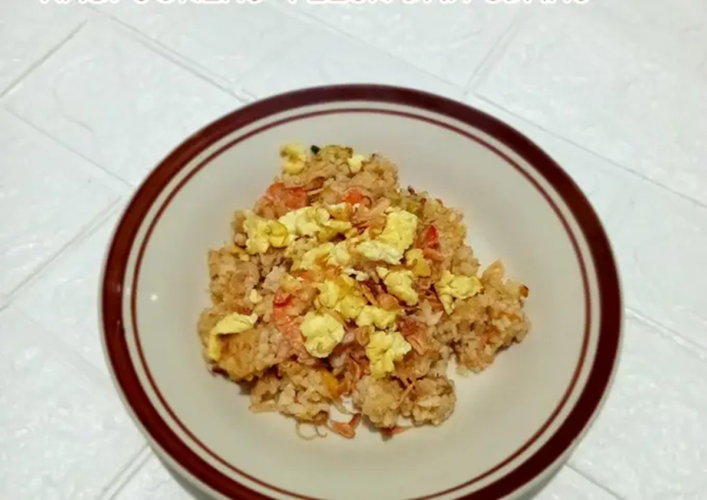
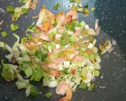
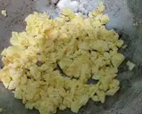

Nasi Goreng Telur Udang
|
 |
Cara Membuat
- Tumis bumbu halus sampai wangi lalu masukkan udang. Tumis hingga berubah warna.

- Masukkan wortel, sawi, aduk rata. Masukkan daun bawang.
 - Masukkan nasi, aduk rata. Tambahkan sambal, kecap manis dan saus raja rasa. Masak hingga matang.
- Panaskan minyak bikin orak-arik telur.
 - Siap disajikan.
** Selamat Mencoba **